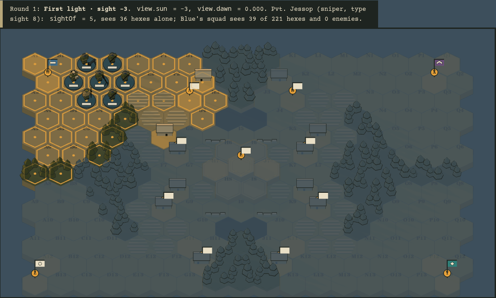
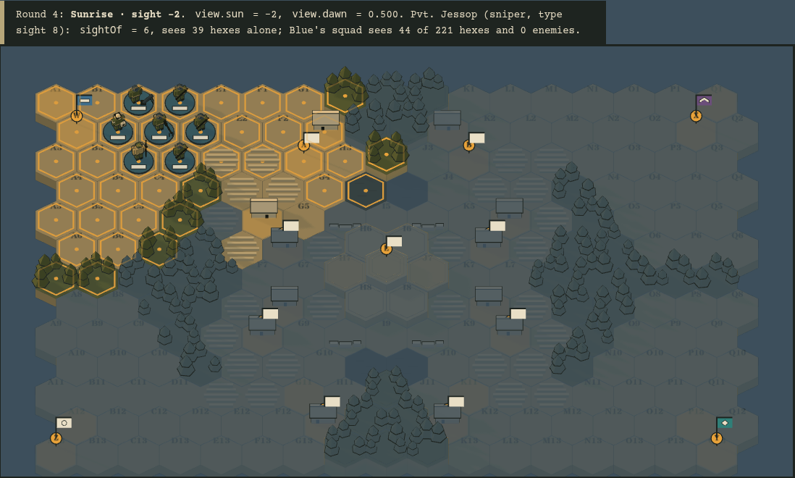
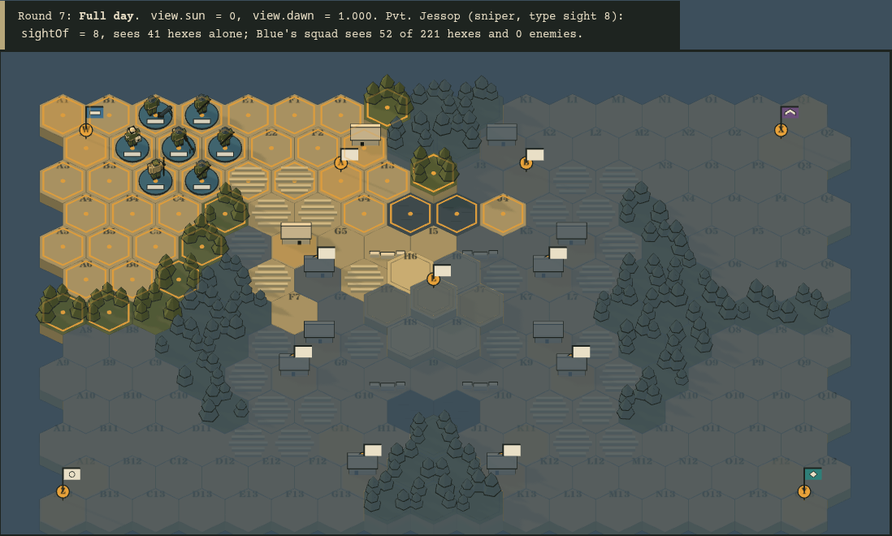
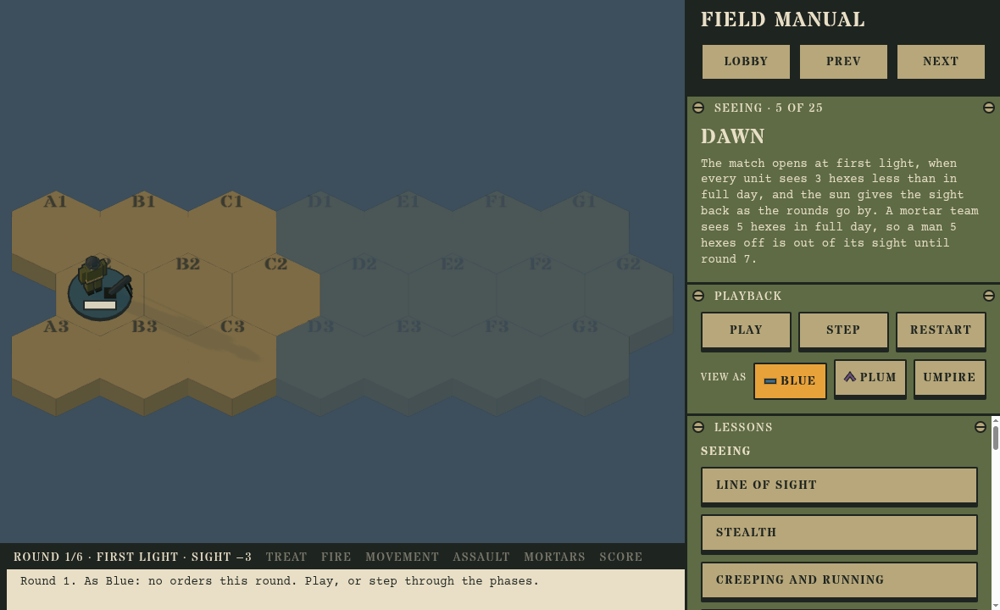

Eval 19 — The rising sun
The match begins in half-light. A unit's sight in round r is its type's sight plus
SUN[min(r, SUN.length) − 1], at least 1, with SUN = ?. Ranges of actions do not change;
an action whose sight rule is own can only be used on a hex the unit itself sees. The board's light follows the
view's dawn. Only Vite is needed (no game server): npx vite --port 5194 --strictPort, then open
http://localhost:5194/eval/19-rising-sun.html. ?round=4 opens the slider on that round.
What the implementer saw (2026-11-19): this page in headless Chromium (Playwright's build,
SwiftShader WebGL) on a Vite at 5194: the board drew, and the three screenshots below were taken from it with ?round=1,
4 and 7 (dawn 0, 0.5, 1). The ease between two lights (about a second) was not watched frame by frame: a
screenshot is taken after the first view, which is set at once. The manual at /?manual=dawn was opened the same way and
showed round 1 at first light (screenshot below); the lesson was not played through to round 6 in the browser (its rounds are checked by
checkLesson on this page and in src/manual/lessons.test.ts). Mean brightness of the board crop goes from 78 (dawn 0)
to 83 (0.5) to 90 (1); on a lit patch of open ground 115 → 137 → 155.
1. The real board on crossroads, round 1 to 8
A four-player match from createMatch (presets dealt in order). The board shows Blue's (seat 0) viewFor of the
same state with round set by the slider: its fog is what Blue's whole squad sees. The amber dots are the hexes the chosen unit
sees alone (visibleHexes of a state holding only him). Both come from the real rules; the light is the kit's
light(scene, view.dawn), called by the board's setView.
2. The Dawn lesson in the real manual
The real client at /?manual=dawn: Blue's mortar team on A2
watches Plum's rifleman on F2, five hexes off, on open ground. Nobody moves for six rounds. The round word over the phases says the
light; the board brightens each round. Press Play (or Step).
3. Before and after, from seeded matches
Real runs on 2026-11-19, npx tsx scripts/seeded.ts --figures 600 (seeds 1001 to 1600: 200 matches for each player count,
Supply Line, the scripted players of scripts/seeded.ts), once before the sun (the engine of task 18; the script already
counting first contact) and once after. First contact is the round in which any player was first told of an enemy (a
spotted event). Went down counts every time a man went down (men come back in Supply Line); down at the end
is the men down when the match ended.
| players | first contact (round) | men went down | down at the end | hits | enemies in view when planning | ambushes | supply in hand | |||||||
|---|---|---|---|---|---|---|---|---|---|---|---|---|---|---|
| before | after | before | after | before | after | before | after | before | after | before | after | before | after | |
| 2 | 4.38 | 4.89 | 5.54 | 5.42 | 1.23 | 1.15 | 17.86 | 17.58 | 23.36 | 22.27 | 1.73 | 1.76 | 107.98 | 105.86 |
| 3 | 2.24 | 2.89 | 12.41 | 12.62 | 2.39 | 2.37 | 36.73 | 37.1 | 63.51 | 61.46 | 3.45 | 3.32 | 119.18 | 117.38 |
| 4 | 1.71 | 2.3 | 20.32 | 20.48 | 3.56 | 3.78 | 57.74 | 58.59 | 115.82 | 108.27 | 5.14 | 4.84 | 124.74 | 123.87 |
| all | 2.77 | 3.36 | 12.75 | 12.84 | 2.39 | 2.43 | 37.44 | 37.76 | 67.56 | 64 | 3.44 | 3.3 | 117.3 | 115.7 |
Reading. First contact comes about half a round to two thirds of a round later; fewer enemies are in view while planning (−6.5% with four players); the number of men put down per match does not change beyond noise. The scripted players walk to the objectives and shoot at what they see; they do not try to slip in under the dark, so these figures say little about infiltration. Seat figures (four players, score against the others): before −3.90, +4.40, +3.90, −4.40 (± 1.5); after −5.92, +3.41, +3.44, −0.92 (± 1.6).
npm run bots -- --matches 200 after the change (seed 134195409): 200 of 200 matches passed; the bots' own sight checks use
sightOf on their view.
4. Screenshots, from this page




/?manual=dawn, before Play: round 1 of 6, first light, the mortar's long shadow; F2 under the fog.What does not work, or was not looked at
- The easing of the light between two rounds was not watched frame by frame (it is a one-second smoothstep in the board's
setView; screenshots show its ends). - The play screen's round readout ("First light · sight −3", "Full day") and the sight in the hex and unit descriptions were
tested as text (
src/client/ui/light.test.ts); the play screen itself was not opened in a browser for this task, and the readout's extra line was not tried at phone sizes. - The seeded and bot players do not use the dark on purpose, so the before/after figures show the rule's mechanical effect, not how people will play it.
- The manual's other lessons are now played in full day (round 7 of the match), so their rules read as before; only Dawn
starts at round 1. That is a choice (a lesson field,
round), not something the task doc asked for. spotsnow takes the state instead of the map (it needs the round): a change to a pinned v1 signature, folded into the plan.sightOftakes a state or a view (the plan pinned a state; the client needs it on a view).